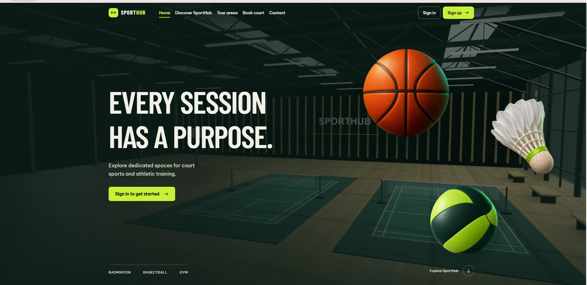

Portfolio
Selected work,
in detail.
The problems I worked on, the parts I contributed, and what the results actually tell us.
01 / Project
2026 - Present · In development
SportHub
Connecting the everyday work of a sports center.

The context
A web application for a multi-sport center, bringing together memberships, classes, court bookings, payments, and staff workflows.
Explore the repositoryMy contribution
- Updated EF Core and LINQ queries for revenue, points, and refund reports, grouping refunds by recorded payout date. Designed the management dashboard.
- Added integration tests and Playwright browser tests for report filters, exports, and dashboard workflows.
- Designed member and coach workflows and interfaces, reviewed UI/UX, and proposed improvements.
- Deployed the application and configured VNPay Sandbox to test payment flows.
02 / Project
2026 · Live event ticketing
TEDx Ticketing Platform
Building for the people on both sides of a purchase.
The context
A ticketing platform for TEDx FPTUniversity, developed from an existing MVP and used during live event ticket sales.
My contribution
- Designed the homepage and ticket flow, then added promotions and speaker registration to the MVP.
- Integrated Telegram order notifications so the sales team could follow new purchases.
- Helped test, debug, and operate the platform during the ticket sale period.
Project stack Next.js, TypeScript, Prisma, MySQL, Redis, Resend, Playwright.
Explore the repositoryA purchase reaches
the people behind it.
- Ticket purchase
A customer places an order.
- Telegram notification
The new order reaches the sales team.
- Sales & support
The team tracks purchases and helps customers.
Workflow diagram · TEDx FPTUniversity
03 / Research
2026 · First author & research team lead
When requirements
leave room for doubt.
Multimodal Pretraining Transfer for Text-Only Ambiguity Detection in Software Requirements
Accepted at FISAT 2026, with a conference presentation planned.
I led an NLP study comparing Qwen2.5 and Qwen2.5-VL for ambiguity detection in software requirements, using zero-shot evaluation and 4-bit QLoRA fine-tuning.
- Dataset
- 2,109 deduplicated QuRE requirements
- Evaluation
- 3 seeds
- Question
- Can multimodal pretraining transfer to a text-only task?
Fine-tuned VLM · 3-seed evaluation
- Mean accuracy
- 86.3%
- Macro F1
- 0.836
What the result means
The difference from the fine-tuned LLM was not statistically significant (p = 0.505). These scores do not establish that the VLM outperforms the LLM.
04 / Activities
Leadership, events & community
Working with people.
TEDx FPTUniversity · May - Sep 2026
Head of Customer
Service Department
3people across
development & support
Alongside the ticketing work, I led a three-person development and customer support team.
- Helped plan ticket benefits, pricing, and promotion.
- Coordinated the team's development and support work.
- Handled customer requests and urgent issues during ticket sales.
Earlier & alongside
- Jun - Aug 2025TEDx FPTUniversityEarlier participation
- 2026FPT Global HackathonHackathon
- 2026RMIT GenAI HackathonHackathon
- CommunityMầmVolunteer project
The concise version